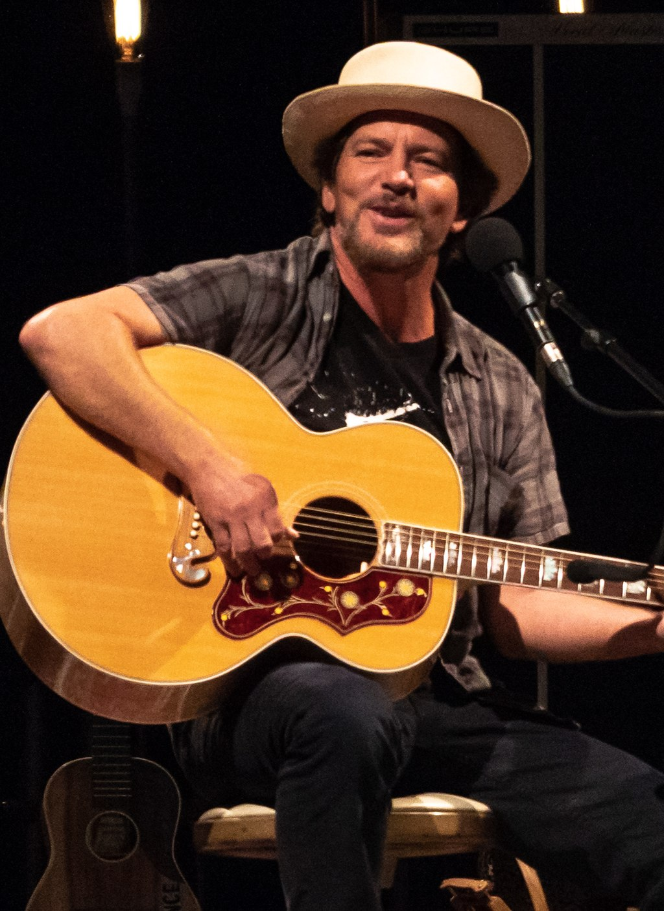
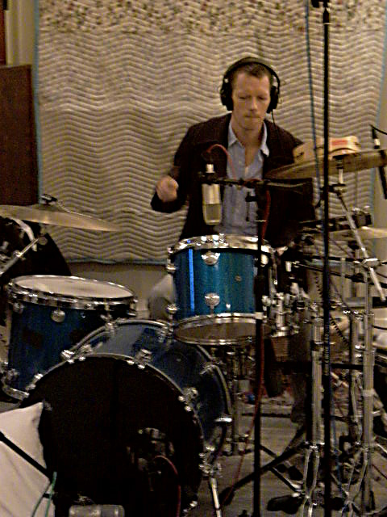

Current Band Members:
Eddie Vedder
- Born in December 23, 1964.
- Lead vocalist
- Primary lyricist
- One of the three guitarists
Jeff Ament
- Born in March 10, 1963.
- One of the three guitarists, with him being the bassist
- Wrote or co-wrote many of Pearl Jam's hits
- Was formerally part of the bands Green River and Mother Love
Stone Gossard
- Born in July 20, 1966.
- One of the three guitarists, with him being the rhythm guitarist
- Was formerally part of the bands Green River and Mother Love
Mike McCready
- Born in April 5, 1966.
- One of the three guitarists, with him being the lead guitarist
Matt Cameron
- Born in November 28, 1962.
- The 5th drummer of the band
- Joined the band 1986 and became a permanent member in 1998
- Ranked 52nd on the list of the "100 Greatest Drummers of All Time" by Rolling Stone
Former Band Members:
David Krusen
- Born in March 10, 1966.
- Former drummer of the band
- Known for his work on the band's debut album, Ten
Matt Chamberlain
- Born in April 17, 1967.
- Former drummer of the band for 3 weeks
Dave Abbruzzese
- Born in May 17, 1968.
- Former drummer of the band replacing Dave Krusen
Jack Irons
- Born in July 18, 1962.
- Former drummer of the band
- Founding drummer of another band called Red Hot Chili Peppers
Notable Albums:

Ten
- Released in August 27, 1991
- The debut studio album of the band
- Received great success as a grunge genre album and reached 2nd on the Billboard 200
- Considered to be played in the role of the rice of alternatice rock
Vs.
- Released in October 19, 1993
- The 2nd studio album of the band
- Sold 950,378 copies in the first 5 days on sale
- Held the 1st spot on the Billboard 200 for 5 weeks
Vitalogy
- Released in November 22, 1994
- The 3nd studio album of the band
- Sold around 877,000 copies in the first week on sale
- Focuses more on the punk rock and hardcore genre compared to grunge from other albums.
- Considered to be the most experimental album of the band due to the album's more diverse use of sounds